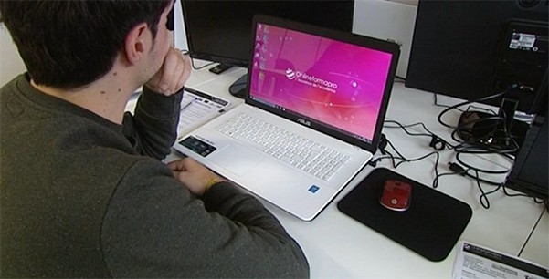
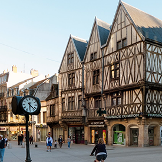
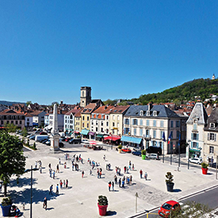
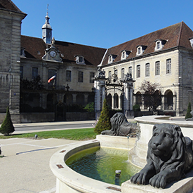
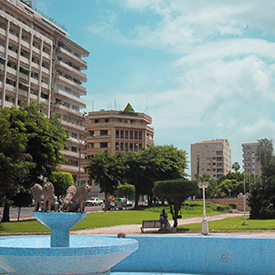

FORMATION LABELLISÉE GRANDE ÉCOLE DU NUMÉRIQUE
La Grande École du Numérique est un réseau de plus de 400 formations aux métiers du numérique. Elle favorise l'inclusion aux besoins des recruteurs en compétences numériques.
Les 14 écoles Access Code School ont été labellisées en tant que "Fabrique de la Grande École du Numérique"
La Grande École du Numérique c'est répondre au besoin d'emploi dans le secteur du numérique.
- Accessible sans condition de diplôme
- Une approche pédagogique renouvelée
- Visant l'insertion professionnelle et sociale des jeunes
- Anticiper ce que seront les métiers de demain
UN ENSEIGNEMENT ADAPTÉ À LA VIE PROFESSIONNELLE

Apprendre la théorie avant le cours, pour approfondir les acquies en groupe

Explorer des problématiques réelles de codages et de développement

Apporter une souplesse dans l'utilisation des outils et techniques ou ressources
Disposer d'une aide pragmatique dans le transfert des savoirs
développer ses compétences par l'auto-formation grâce à la curiosité et aux bons outils
À CHACUN SON MÉTIER
8 mois de formation dont 2 en entreprise
Notre formation est gratuit, diplômante, intensive et accessible sans prérequis de diplôme. Elle permet un accès rapide aux métiers de Développeur d'applications web & mobile. Après 2 mois d'apprentissage, le stagiaire se spécialise afin de devenir Développeur Front-End ou Développeur Back-End en focntion de ses goûts et de ses compétences.
accessible sans condition de diplôme
Motivation, esprit logique, autonomie, capacité d'analyse, rigueur, sens créatif, capacité à s'autoformer et envie de travailler en équipe sont les seuls critères de sélection.
À CHACUN SON PROJET

Chaque apprenant bénéficie :
- d'un écosystème ultra-stimulant adapté à la réalité professionnelle d'aujourd'hui
- d'une démarche personnalisée qui le rend acteur de son apprentissage
- d'un encadrement adapté par des coachs formateurs
- d'un équipement de pointe, dans un open-space visant à coller au plus près à la réalité professionnelle
- d'un complément de formation sous forme d'ateliers du soir, hebdomadaires
- d'initiation à une technologie ou d'approfondissement des connaissances
- d'un réseau d'entreprises et de professionnels du numérique
Nos formation Access Code School permettent d'obtenir un Titre professionnel de Niveau III de Développeur logiciel ou de Designer Web.
NOS CENTRES DE FORMATION
   
TÉMOIGNAGES
J'ai intégré l'ACS pour une reconversion professionnelle, sans autre expérience que celle de ma navigation internet, mais plus motivée que jamais à enfin apprendre un métier technique qui me passionne. Aujorud'hui je suis développeuse web dans l'entreprise qui m'a accueillie en stage. J'ai encore beaucoup à apprendre, mais mon parcours prouve qu'avec du travail et de la persévérance, tout est possible !
Julie | Promotion Wild Web Lions - Belfort | 2018
Voir tous les témoignages